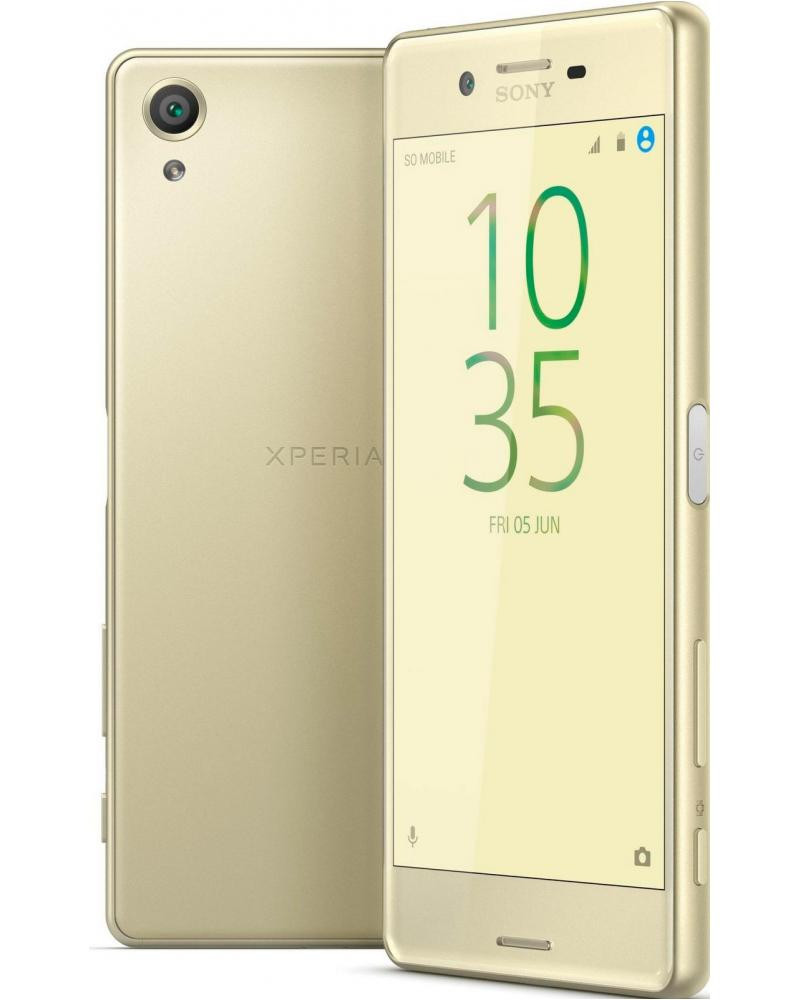

Sony Xperia X (sony-suzu)
Jump to navigation
Jump to search
|
 Sony Xperia X | |
| Manufacturer | Sony |
|---|---|
| Name | Xperia X |
| Codename | sony-suzu |
| Released | 2016 |
| Category | testing |
| Original software | Android 6 -> 7 -> 8 on Linux 3.10 |
| postmarketOS kernel | 4.9.182 |
| Hardware | |
| Chipset | Qualcomm Snapdragon 650 (MSM8956) |
| CPU | Hexa-core, 2x Cortex-A72 1.8GHz (big cluster), 4x Cortex-A53 1.2GHz (LITTLE cluster) |
| GPU | Adreno 510 |
| Display | 1080x1920 IPS TFT |
| Storage | 32/64 GB |
| Memory | 3072 MB |
| Architecture | aarch64 |
{kind=link}
| USB Networking |
Works
|
|---|---|
| Flashing |
Works
|
| Touchscreen | |
| Display |
Works
|
| WiFi | |
| FDE | |
| Mainline |
Partial
|
| Battery | |
| 3D Acceleration |
Broken
|
| Audio | |
| Bluetooth | |
| Camera |
Broken
|
| GPS | |
| Mobile data | |
| SMS | |
| Calls | |
| USB OTG | |
| NFC | |
| Accelerometer | |
|---|---|
| Magnetometer | |
| Ambient Light | |
| Proximity | |
| Hall Effect | |
| Barometer | |
| Power Sensor | |
| Camera Flash | |
|---|---|
| Keyboard | |
| Touchpad | |
| USB-A | |
| HDMI/DP | |
| Ir TX | |
| Ir RX | |
| Stylus | |
| Haptics | |
| Ethernet | |
| FOSS bootloader | |
[[Category:Android 6 -> 7 -> 8 on Linux 3.10]]
Contributors
- Konrad Dybcio (@konradybcio)
Maintainer(s)
- Konrad Dybcio (@konradybcio)
Users owning this device
- Delta503 (Notes: UBports daily driver)
- DylanVanAssche (Notes: Sailfish OS)
- Ksp-atlas (Notes: Random reboots)
- Linmob (Notes: Ubuntu Touch)
- Maufl
- Treier57lol
Additional notes
- This device has *some* out-of-tree mainline kernel support (some by @bartcubbins) (and some by @kholk)
- Xperia X has been supported by Sony Open Devices Project on CAF kernels 3.10, 3.18, 4.4 and now still is on 4.9 with a chance to board the 4.14 hype train
- There's a good chance one could get graphics, modem etc. working with libhybris on kernel 4.4. There's also a mer-hybris port by Jolla for the official "Sailfish X" SFOS release.
- Second codename (loire_suzu) comes from Sony's platform naming scheme, where Loire is a family of MSM8956/APQ8956-based devices along with Xperia X Compact (kugo), Xperia Touch [the projector tablet.. thingy] (blanc) and an unannounced, probably prototype device (oak)
How to enter flash mode
With device powered off, hold [VOLUME +] and plug USB cable in. Device's LED will turn blue, meaning it has entered fastboot mode.
Installation
Works fine with the typical pmbootstrap install & pmbootstrap flasher procedure.
See also
- pmaports!482 Initial MR
- Device package
- Kernel package